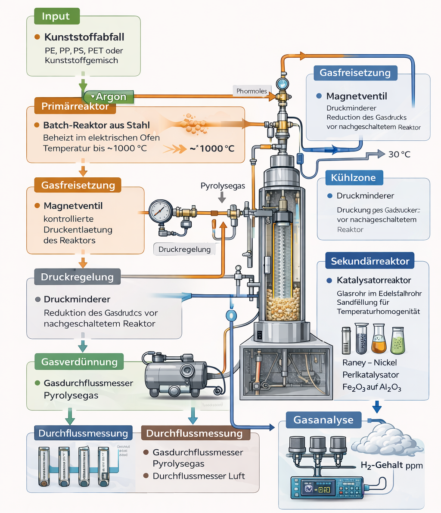
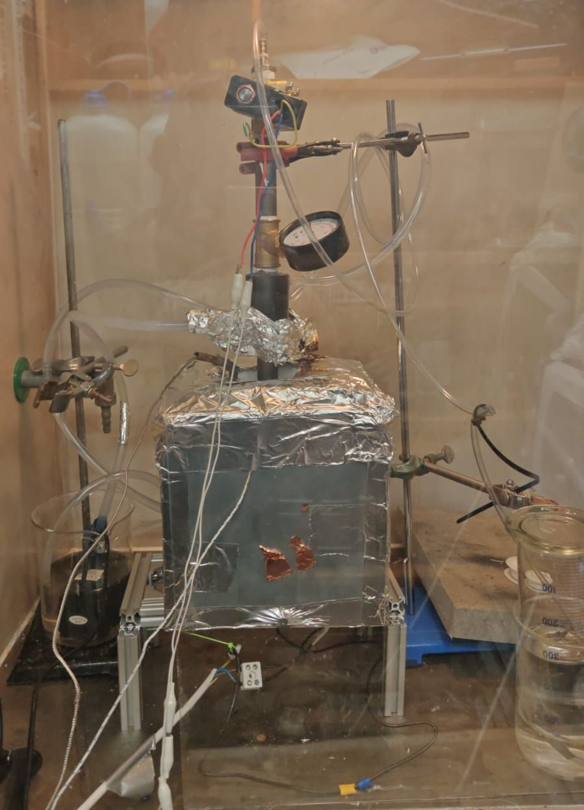
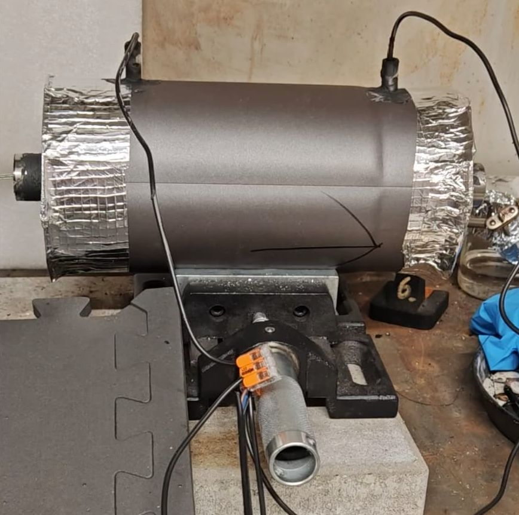
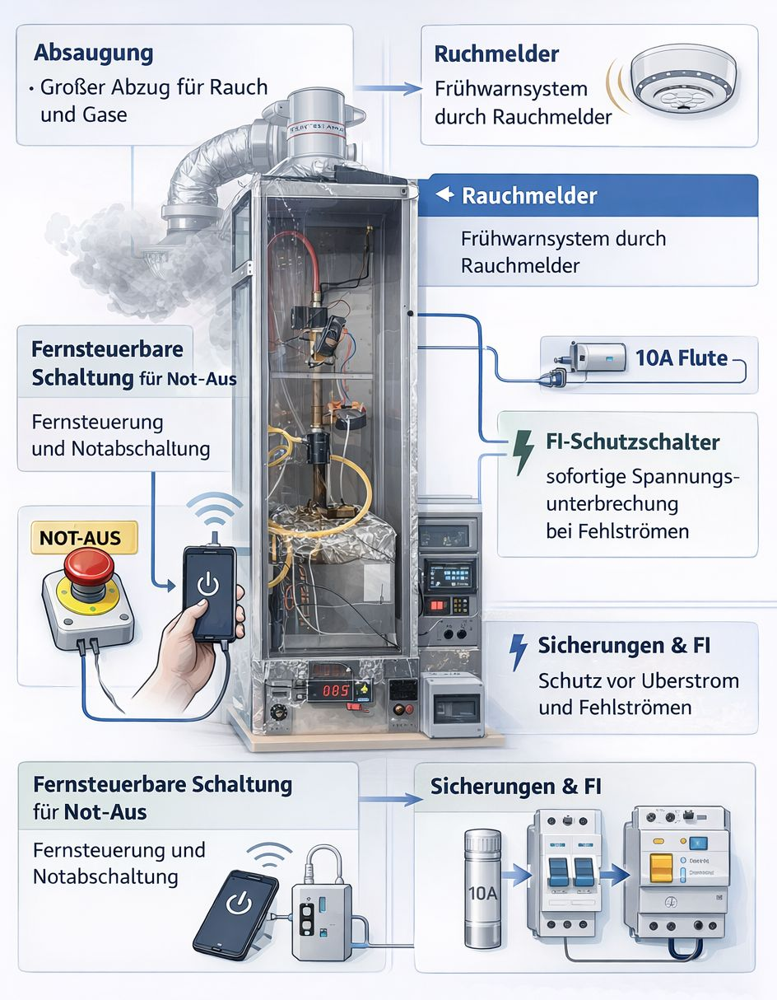
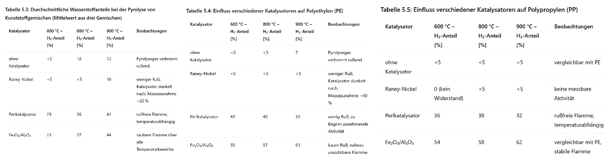
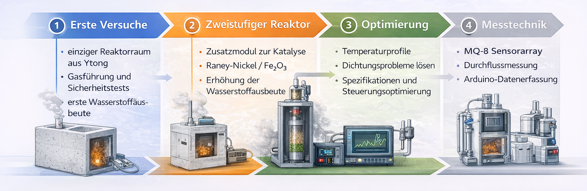
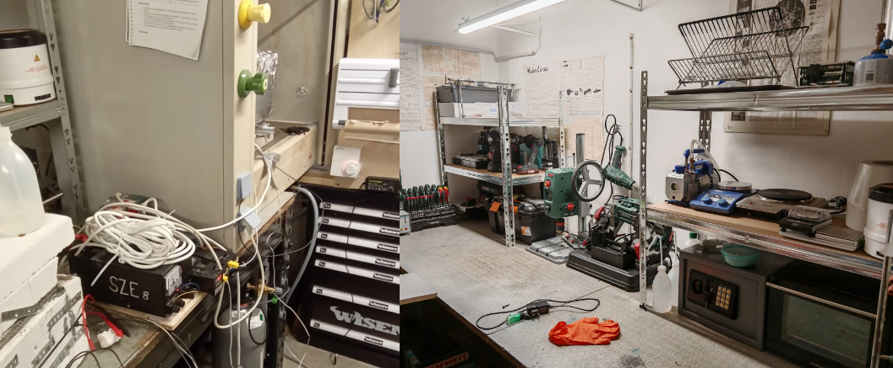

Projekt in einem Satz
ThermoH2 entwickelt und untersucht einen sicher betriebenen Batch-Pyrolysereaktor, der Kunststoffgemische thermochemisch umsetzt und dabei ein wasserstoffreiches Gas sowie festen Kohlenstoff erzeugt. Der Anspruch ist nicht nur die Reaktion selbst, sondern ein kontrolliertes, messbares und weiterentwickelbares Gesamtsystem.
Problem
Mischkunststoffe, Verbunde und stark verunreinigte Kunststoffströme sind mechanisch oft nur schwer oder gar nicht hochwertig recycelbar. Sortierung, Additive und Materialkombinationen begrenzen klassische Verfahren deutlich.
Ansatz
Thermische Zersetzung unter Sauerstoffausschluss, kombiniert mit Katalysatoren, Inertgasführung, Gasreinigung und Sensorik. So soll die Produktverteilung gezielt beeinflusst und die Wasserstoffbildung verbessert werden.
Nutzen
Neben einem wasserstoffhaltigen Gas entsteht fester Kohlenstoff als Nebenprodukt. Damit verbindet das Projekt Rohstoffrückgewinnung, Energieträgererzeugung und experimentelle Verfahrenstechnik in einem kompakten System.
Konzept
Das Grundprinzip von ThermoH2 ist die thermische Spaltung von Kunststoffabfällen unter Sauerstoffausschluss. Die Polymere werden in einer geschlossenen Reaktionskammer auf hohe Temperaturen erhitzt, dabei in kleinere Moleküle zerlegt und anschließend in einer Katalysatorzone sowie in der Gasnachbehandlung weiter beeinflusst.
Feedstock Auswahl
Ausgangsmaterial sind gemischte Kunststoffe, Verbunde und schwer trennbare Fraktionen. Masse, Zusammensetzung, Vorbehandlung und Versuchsbedingungen werden dokumentiert, damit die Ergebnisse vergleichbar bleiben.
Pyrolyse im Hauptreaktor
Vor dem Aufheizen wird das System mit Argon gespült, um Luftsauerstoff zu entfernen. Im Reaktionsraum werden die Polymerketten thermisch zerlegt. Ziel ist eine definierte Produktverteilung aus Gasphase, eventuell Kondensaten und festem Rückstand.
Katalytische Nachbehandlung
Die entstehenden Kohlenwasserstoffe werden in oder hinter dem Hauptreaktor über geeignete Katalysatoren weiter umgesetzt. Dabei sollen Spaltungs- und Reformierungsreaktionen gefördert und die Bildung molekularen Wasserstoffs erhöht werden.
Gasreinigung und Messung
Die gasförmigen Produkte werden über Reinigungsstufen geführt, getrocknet und in einer definierten Messstrecke erfasst. Temperatur, Gaszusammensetzung und Sensorwerte dienen der quantitativen Auswertung.

Aufbau
Der Pyrolysereaktor bildet die zentrale Reaktionseinheit. Typischerweise besteht das System aus einem hitzebeständigen Stahl- oder Quarzrohr, das in einen Ofen oder eine Heizmanschette eingebettet ist. Entscheidende Baugruppen sind Reaktionsrohr, Heizelement, Temperaturfühler, Gaszuführung, Gasabführung und temperaturbeständige Dichtungen.
Im Hauptreaktor wird das Kunststoffmaterial unter Sauerstoffausschluss auf hohe Temperaturen erhitzt. Die Polymerketten zerfallen dabei thermisch in kleinere Moleküle. Die Dichtheit des Reaktionsraums ist zentral, da schon geringe Sauerstoffmengen zu unerwünschter Oxidation führen können.

Die Katalysatorzone befindet sich im oder hinter dem Hauptreaktor. Das Reaktionsgas strömt durch ein Festbett, in dem weitere Crack- und Reformierungsreaktionen stattfinden. Wichtige Anforderungen sind große Oberfläche, thermische Stabilität und mechanische Festigkeit.

Nach dem Reaktor werden die Produkte kontrolliert abgeführt, gegebenenfalls gekühlt und in Reinigungsstufen weiterbehandelt. Ziel ist eine definierte, reproduzierbare Messstrecke mit möglichst geringer Verfälschung durch Kondensate oder Feuchtigkeit.
Der gesamte Aufbau ist auf kontrollierte Bedingungen ausgelegt. Absolute Dichtheit, Schutzgasführung, Temperaturkontrolle, sichere Gasabführung und eine kontinuierliche Überwachung sind entscheidend. Da bereits kleine Sauerstoffmengen bei hohen Temperaturen problematisch sein können, müssen alle Bauteile auf die gewählten Betriebsbedingungen abgestimmt sein.
- Arbeiten im Abzug
- Gasdichte Verbindungen und hitzebeständige Dichtungen
- Kein offenes Feuer im Umfeld des Versuchs
- Kontinuierliche Überwachung von Temperatur und Gasstrecke
- Kontrollierte Inertgaszufuhr über Druckminderer und Durchflussregler

Theorie
Pyrolyse bezeichnet die thermische Zersetzung organischer Stoffe ohne Oxidation. Im Fall von Kunststoffen bedeutet das: Die langen Polymerketten werden bei hohen Temperaturen in kleinere Moleküle aufgespalten. Je nach Material, Temperatur, Aufenthaltszeit und Reaktorführung entstehen gasförmige Kohlenwasserstoffe, Wasserstoff, mögliche Kondensatfraktionen und fester Kohlenstoff.
Rolle der Katalysatoren
Nickelbasierte Katalysatoren sind besonders gut für Reformierungs- und Spaltungsreaktionen geeignet. Auf der Metalloberfläche werden C–C- und C–H-Bindungen aktiviert, wodurch kleinere Moleküle und in hohem Maß Wasserstoff entstehen können. Im Projektkontext kommen unter anderem Nickel auf Aluminiumoxid, Eisenoxid auf Trägermaterial und Raney-Nickel in Betracht.
Typische Katalysatoren im Projektkontext
- Nickel auf Aluminiumoxid als klassischer Reformierungs- und Spaltungskatalysator mit großer aktiver Oberfläche
- Eisenoxid auf Trägermaterial als kostengünstigere und thermisch stabile Alternative
- Raney-Nickel als hochporöses, sehr reaktives Nickelmaterial mit großer innerer Oberfläche
Probleme und Herausforderungen
Ein zentrales Problem ist die Verkokung. Dabei lagert sich fester Kohlenstoff auf der Katalysatoroberfläche ab und blockiert aktive Zentren. Das führt zur Deaktivierung. Zusätzlich spielen thermische Stabilität, Selektivität und Empfindlichkeit gegenüber Verunreinigungen der Gasgemische eine wichtige Rolle.
Experimente
Die Versuchsreihen werden so geplant, dass einzelne Einflussgrößen gezielt variiert werden können. Dazu zählen Temperatur, Haltezeit, Feedstock-Zusammensetzung, Lage und Masse des Katalysators sowie Bedingungen in der Gasnachbehandlung.
| Versuchsreihe | Variablen | Messgrößen | Status |
|---|---|---|---|
| R1: Basisbetrieb | Temperatur, Haltezeit, Feedstock | Gasvolumen, Sensorwerte, Rückstand | in Arbeit |
| R2: Nickel auf Al2O3 | Katalysatormasse, Position, Temperatur | H2-Signal, Kondensat, C-Rückstand | geplant |
| R3: Eisenoxid auf Träger | Trägermaterial, Aktivphase, Haltezeit | Vergleichbarkeit, Stabilität, Selektivität | geplant |
| R4: Raney-Nickel | Temperaturfenster, Gaszusammensetzung | Reaktivität, Wasserstoffbildung, Verkokung | geplant |

Ergebnisse
Die Ergebnisse werden schrittweise veröffentlicht. Ziel ist nicht nur die Darstellung einzelner Versuchserfolge, sondern der Vergleich von Reproduzierbarkeit, Temperaturführung, Katalysatoreffekt und Produktqualität unter definierten Bedingungen.
Reproduzierbarkeit
Wie stabil verhalten sich Temperaturprofil, Sensorwerte und Rückstände bei vergleichbaren Versuchsbedingungen, und welche baulichen Änderungen verbessern die Konstanz?
Katalysator-Effekt
Welche Unterschiede zeigen sich bei Wasserstoffsignal, Nebenproduktbildung und Koksablagerung zwischen verschiedenen Katalysatorsystemen?
Produktqualität
Bewertet werden Gasphase, eventuelle Kondensate und fester Kohlenstoff. Entscheidend ist dabei nicht nur die Menge, sondern auch die Qualität und Weiterverwendbarkeit.
Mögliche Weiterentwicklung
Das Projekt ist bewusst als lern- und ausbaufähige Plattform angelegt. Reaktor, Katalysatorzone, Gasreinigung und Messsystem können Schritt für Schritt erweitert werden.
Langfristig ist ein Übergang zu standardisierteren Beschickungs- und Betriebsweisen denkbar. Dazu gehören verbesserte Temperaturführung, reproduzierbare Gasströme und perspektivisch kontinuierlichere Prozesse.
Ein zentrales Thema ist die thermische Effizienz des Systems. Dazu zählen bessere Isolation, optimierte Heizprofile und eine genauere Bewertung der Energiebilanz.
Erweiterte Gasanalyse, genauere Kalibrierungen, Charakterisierung des festen Kohlenstoffs und ein noch tieferer Vergleich mit Literaturdaten würden die Aussagekraft des Projekts deutlich erhöhen.

Unser privates Labor
ThermoH2 entsteht nicht in einem Institutsgebäude, sondern in einem privat aufgebauten Labor. Das bedeutet Eigenleistung, technische Improvisation, konsequente Dokumentation und konkrete Investitionen in Sicherheit, Messmittel, Werkstoffe und Nachbehandlung.
Wofür das Labor steht
- Eigenbau und Iteration mit sauberer technischer Dokumentation
- Fokus auf Sicherheit, Dichtheit und kontrollierte Gasführung
- Messbarkeit statt bloßer Demonstration
- Transparenz bei Material, Aufbau und Kosten

Presse und Veröffentlichungen
Hier sammeln wir Berichte, Veröffentlichungen und Medienbeiträge zum Projekt, u.a. Presseartikel, Wettbewerbsberichte, Schulveröffentlichungen oder Beiträge von Partnern.
Rheingau Echo
Bericht über das private Labor und das ThermoH2-Projekt im Rheingau Echo
Kontakt
Wenn du Fragen zum Projekt hast, Kooperationen anbieten willst oder Unterstützung ermöglichen möchtest, schreib uns direkt.
- Teamname: ThermoH2
- E-Mail: doron@doron.info, jakob@hollingshaus.de
- Ort: Eltville, Deutschland